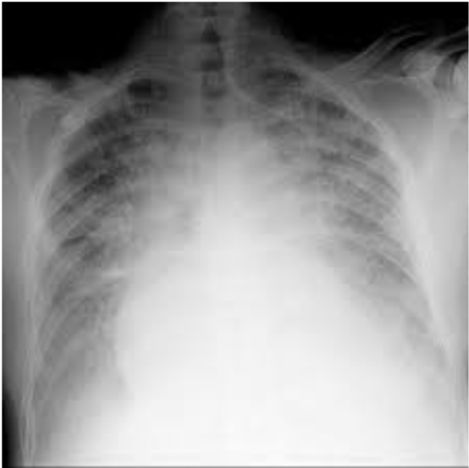

Akutte respiratoriske tilstande
Dans besked
Dan har skrevet mail til undervisere om at de skal undervise i den typiske præsentation af den hyppige lidelse i morges kl. 5.
Eksamen
Der var lidt snak om eksamen. Ikke fokus på alle mulige detaljer, men på at kende egne begrænsning og kalde på hjælp.
CASE 1: Eksamensopgave fra tidligere
- 56-årig ryger og adipøs mand indlægges med dyspnø.
- Ikke tidligere hospitaliseret.
- Febril og sengeliggende gennem den sidste fire dage.
- Du ser patienten i FAM, hvor der er taget følgende basale værdier:
- BT: 115/70, Puls 110/min, resp. frekvens 26/min og saturation uden ilt på pulsoximeter 90%.
- Beskriv initial behandling af patienten, diagnostiske overvejelser og udredning.
Initial behandling
- A: kæbeløft, hovedtilbage hvis fedt blokerer
- B: ilt + maske, evt. inhalationer hvis bronkospastisk
- C: Lidt lave parametre, man kan overveje væskebolus, hvis pt ikke er lungestase obs. / kardiogent shock.
Hvilke diagnoser overvejer du?
- Pneumoni
- KOL
- Asthma
- AMI
- Lungeemboli
3 Hyppige årsager til dyspnø
- Pneumoni
- Obstruktiv lungesygdom (KOL, astma)
- Mb. cordis
Case 2
- Du er forvagt i skadestuen.
- Patient: 65-årig mand med vejrtrækningsbesvær
- A: fri luftvej, nasalt ilttilskud
- B: RF 40, st.p: bilat. Grov krepitation, bronkospastisk, kogende anstrengt vejtrækning, sat 78%, cyanose
- C: puls 130, BT 190, CRT 3-4 sek, HVS
- D: GCS 14, BS 5, normal neurologi
- E: top-til-tå: normoterm, hud i.a.
CRT = Kappilærresppons, HVS = Halsvenestase
Tentative diagnoser
- Lungeødem / -stase
- Højtrykslungeødem
- Hjerte
- Men BT er højt, så hænger det sammen med LV?
- Lungeemboli
- Pneumoni + KOL + Hjertesvigt.
Behandling
- SAT
- NIV?
- Ilttilskud, skrue op for det
- Lejring
- Furix.
- Morfin
- Nitroglycerin
KOL
- Nedsat irreversibel kronisk, obstruktiv. FEV1/FVC ratio < 0,7
- kronisk bronkitits
Behandling
- Ilt til 88-92% i SAT
- Masker / Bronkodilaterende
- beta2-agonist
-
- evt. antikolinergikum
- Prednisolon / Solu-Medrol
- Antibiotika
- Purulent ekspektorat / ændringer (klart -> purulent kan være indikation)
- Nedsat følsomhed for alm pencillin, derfor
- Større doser el anden
- H. inf
- M. catarrhalis
- NIV
NIV-behandling
- Høj CO2 er tegn på nedsat ventilation
- Acidose.
- Forskel på NIV og CPAP
- CPAP: konstant tryk, modsat under ekspiration, rekrutterer atelektaser
- NIV: To tryk, høj tryk under inspiration. Øger ventilationsevne
- NIV-behandling ved KOL i exacerbation med respiratorisk acidose reducerer mortaliteten (NNT:10), nedsætter behovet for intubation (NNT:4) og reducerer antallet af sengedage.
NIV-Indikation
- ???
Astma
- yngre, i øvrigt raske, men kan fremstå mindre medtaget.
- Anfald, relativt hurtigt, min-timer, men også langsommere over dage
- Åndenød
- Pibende vejrtræning
- Hoste
- ????
- Ætiologi
- Med compliance
- Infektioner
- Allergi
- Svær astma
Initielle behandling
- Ilt
- Massere!
- Masker
- Combivent
- beta2-agonist (SABA) + ipratropiumbromid (SAMA)
- korttidsvirkende - hvor længe
- beta2-agonist (SABA) + ipratropiumbromid (SAMA)
- Combivent
- Solu-Medrol / Prednisolon
- Lejring?
- Hvis manglende effekt
- MgS
- MgS is a drug for everything.. bronkodilaterende..
- Så effektivt er det heller ikke vist.
- MgS
Observation
- Tæt observation hvert 15. min
- Skal observeres tæt, ikke lade sig snyde af at de ser okay ud.
- AT, RF, puls, FEV1 eller PEF, ABG.
- PCO2
- Hyperventilerer så CO2 falder
- Pludselig vender det, og CO2 stiger igen.
Når der patienter kommer nogle med svære astmaanfald
- Mange er velbehandlede, så er de dårlige patienter, er dårlige
- NIV har ikke plads
- Astmapatienter skal tages alvorligt.
- De kan rette sig hurtigt, men få recidiv og gå tilbage
- forsigtighed for med at sende hjem/videre
Iltterapi
- Man vinder ikke så meget SAT, ved SAT > 90%, svt pO2 = 8 kPa
- Ilt er potent lægemiddel
- Der skal være en plan
- Større mængder på resoourvoirmaske
- Fugtigt ilt ved længere tid.
- Ilt har bivirkninger, derfor bør man ikke tilstræbe 100% SAT
Der ligger en NKR om ilt behandling man kan kigge på
Paraklinik
Pulsoximetri
- 93-100%
- Fejlkilder
- Kulilteforgiftning
- SAT bliver hurtigt 100% pga CO.
- Man skal have a-gas
- [Cyanid? (tror ikke det var et problem..)]
- Dårlig perfusion - for lavt tal
- Neglelak - skulle ikke være så stort problem
- Kulilteforgiftning
Peakflowmåling
- God ide ved astma
- < 200 L/min ved akut astma
- < 50% af personlig bedste målt
Ateriel blodgas (ABG)
- Et af de vigtigste redskaber ved akut patient
- Informationer
- Oxygenering
- pCO2 4,5 - 6
- pO 9-13
- Ventilation
- pC02
- pH (7,35 - 7,45)
- Metabolisme
- BE
- Norm: -3 til 3
- stHCO2
- Norm: 22-26
- Laktat
- Mål for iskæmisk metabolisme
- Norm: <2 mmol
- Laktat er ikke farligt i sig selv - "faresignal"
- Hvis man er ude at løbe, så er den 6-8 hvis man har gået til den
- Men hvis man ligger i en seng og den er høj, så er det skidt.
- Anion gap
- Ikke så vigtigt ved respiratoriske tilstande, men spiller en større rolle ved forgiftninger, tror jeg?
- BE
- Oxygenering
Hannes forslag til fortolning
- Start med pH
- Acidose eller alkalose
- Derefter respiratorisk el. metabolisk

- Hanne har ikke set en resp alkalose kompenseret, fordi man stopper med at hyperventilerer.
- Store mængder furix giver K+ tab. (og det gjorde at de stoppede med at trække vejret ? (det er vist intensiv-nørderi)
A-gas case 3
- 63 årig kvinde indlagt efter tre dages utilpashed i hjemmet.
- Været træt gennem flere uger og udtalt tørst
- Bleg
- Takypnøisk med frekvens 28-30/min
ABG:
- pO2: 13 kPa
- pCO.: 2,5 kPa
- BE: - 9.0 mEq/l
- HCO;: 15 mmol/l
- Laktat: 3.1
- Glucose: 25.1 mmol/L
- Diagnose: Metabolisk acidose, delvist kompenseret respiratorisk (RF30 + lav pCO2). Formentlig diabetisk ketoacidose
DKA 1. Blodketon/3-hydroxybutyrat ≥ 3 mmol/l eller urinketon ≥ +2 2. Metabolisk acidose (standard bikarbonat eller total CO2 < 18 mmol/l og/eller pH < 7.30) 3. Hyperglykæmi (oftest blodsukker > 15 mmol/l, ved kendt diabetes evt. lavere blodsukker
Case 4
- 22 årig kvinde indlagt akut med dyspnø
- Klinisk forceret vejrtrækning med forlænget ekspiration
- GCS: 15, men svær taledyspnø
- Kendt med svær asthma
- Første A-gas - Kl: 05:15
- pH: 7.42
- pO2: 9.2 kPa
- pCO2: 4.1kPa
- Egen fortolkning: Ok normal, lidt lav pO2, lav CO2.
- Anden A-gas - Kl 06:30
- pH: 7.28
- pO2: 8.5 kPa
- pCO2: 8.1 kPa
- Egen fortolkning: Forværring i pCO2.
- Udvikling fra middel til svær
- Det kan være svært på A-gas at se om man er let eller svær.
- Her er den kliniske observation vigtig. Er patienten udtrættet?
Case 5
- 72 årig mand kendt med langvarig KOL
- 50 pakkeår
- Indlagt med bevidsthedssløring- fundet af hjemmehjælper
- Kan ikke oplyse cpr.nr eller bopælsadresse.
- Reagerer på tiltale med ja / nej
- Respirations frekevens 15/min
- Saturation på pulsoximeter: 90%
ABG
- pH: 7.37
- pO,: 8.1 kPa
- pCO2: 7.9 kPa
- BE: 6.0 mmol/l
- HCO3:29 mmol/l
Analyse
- Metabolsk kompenseret, respiratorisk acidose
- Bevidsthedssløret af høj CO2? Er den høj nok (8)?
- NEJ, dette er formentlig habituelt.
- Formentlig habituel a-gas? Det tager dage at kompensere, så pCO2 har stået på i noget tid.
- Hannes fortolkning: Bragende normal A-gas.
EKG - Case 6-9
- Hannes for dummies EKG
- Se video 36:30 i 2. time.
- Man skal ikke kigge på alt muligt pis i modtagelsen
- Helt simpelt
- Frekvens regelmæssig/ hastighed
- Rytme
- Hypertrofi
- ST- deviationer
Egen note to self: EKG rule of four på lige in the fast lane
EKG - case 6
22 årig kvinde med svær dyspnø
- Fortolkning
- Regelmæssig, P-takker før alle QRS
- Høj frekvens.
- Breddeøget QRS?
- ST-segment. Ingen deviationer
- Ingen tegn til belastning eller iskæmi
- Årsager til sinustakykardi
- Nervøs
- Beta2-agonist
- Ikke farligt for 22 årig
- Man kan give ALT det beta2-agonist man vil til akut astma.
- En ældre medborger - bob, bob
- Lungeemboli
- Kan man sagtens.
- 22 år er lidt ungt, så skal der være disponerende faktorer
EKG - case 7
65-årig mand med kendt IHD
- Fortolkning
- P-takker kunne ikke ses.
- Hurtigt frekvens - takykardi
- Superventrikulær pga smalle QRS.
- Regelmæssig - så ikke flimmer
- Det må være en atrieflagren.
- Hannes fifs
- Savtaklinjer i V1 el. V2.
EKG - case 8
72 årig mand med kendt kardiomyopati
- Fortolkning
- Hurtigt frekvens
- Uregelmæssigt
- Ej p-takker
- Atrieflimren
- Ej ST-deviationer eller iskæmi-tegn.
- Smalle QRS
- Ej fast relation ml. p-takker og QRS.
EKG - case 9
53 årig mand med kendt IDDM, pludselig svær dyspnø
- Fortolkning
- Regelmæssig rytme, smalle QRS
- ST-elevationer i II, III, aVF
- modsidige ST-depressioner
- STEMI!
- Frekvens: langsom
- Typisk bagvægsinfarkt pga II og III
- Bagvægsinfarkter kendetegnet ved 4xB
- Bradykardi
- Block
- Bæ
- Bræk
- Hvorfor har han ikke smerter, men dyspnø
- Diabetes har ofte ikke smerter
- Dyspnø er angina ækvivalent?
Slut på 2. time
Rtg thorax
- Kvalitet - hvordan er det taget?
- Liggende stående, to plan
Rtg. thorax - Case 10
- Pneumothorax
- Behandling:
- Drænanlæggelse
- Forreste aksilfold. midtaksillært,
- Konservativt.
- Trykpneumothorax!
- Midtclaviculært
- A. mammaria - pas på
- Dan kører præhospital
- Læg dem ikke for lavt, så de rammer lever og milt.
- Drænanlæggelse
- Ultralyd er det nye
- Normalt en strand
- Pneumothorax er barcode billede
- Søg på "ultrasound pneumothorax"
Rtg. thorax - Case 11
- Lungestase
- Forstørret kartegning
- Normalt vil væske lægge sig nedat, men her strutter der
- Kerley B-lines
- Udtryk for væske i interlobærrum.
- Forstørret corectesi
- Breddeøget herte > 50% af bredde.
Rtg. thorax - Case 12
- Rtg diagnose: Pleuraeksudat / effusion
- Årsager:
- Cancer
- Infektion
- Iskæmisk hjertesygdom, hjertesygdom.
Gennemgang: https://issuu.com/fadlsforlaglivsstil/docs/radiologi_uddrag_l__ngere
Rtg. thorax - Case 13
- Rtg diagnose: Pneumonitisk infiltrat
Rtg. thorax - Case 14
- Rtg diagnose: Emfysematisk thoraxform.
- Affladet diagframa
- Tøndeformet thorax
Case 15
Case 15
- 57-årig kvinde indlægges på onkologisk afd. 4/9 pga vejrtrækningsbesvær
- Tidl:
- 2018: C. Mamma med knoglemetastaser
- Jan 2020: dese C3-C7 grundet tværsnitssyndrom
- Efterfølgende strålebehandlet. Højdosis prednisolon. I forløbet leukopeni
- Aktuelle:
- Tiltagende vejrtrækningsbesvær i løbet af de sidste dage
- Saturation 90% og feber
Triage
- A: frie luftveje, 02
- B: RF 25, sat 90%, st.p: grov krepitation sin. Sekretraslen. Egale thorax bevægelser.
- C: BT 120/80, puls 110, CRT 2 sek. Blussende.
- D: GCS 15, bevæger alle fire ekstremiteter. BS 7,2.
- E: Temp. 38,8.
- ABG: * pH 7,38 * pO2: 8.8 * pCO2: 4,2 * BE:-3.5
- ABG - analyse
- Metabolisk acdiose, kompenseret resp.
- Hvorfor har hun en metabolisk acidose?
- Årsager: Ikke spist og drukket, væskeunderskud, nyrepåvirkning
- Akut sygdom giver tit en let acidose.
- Primære problem ved ABG: pO2 er lidt lavt, og det skal have lidt ilt.
Rtg thorax
- infiltrat i Venstre overlap (se sidebillede!)
- respekterer fint lap-grænse
Diagnose
- Pneumoni formentlig.
Pneumoni
- CRB-65
- Confusion
- RF > 30
- BT dia < 60, BT sys < 90.
- Age > 65
- Ilt, væske og AB
- AB efter lokale retningslinjer
Slut på 3. time
Morbus cordis
Case 16
- 74-årig kvinde kendt med hjertesvigt
- Indlagt med svær dyspnø og lungeødem
- Tiltagende dyspnø både i hvile og under arbejde over de sidste dage
- Sovet i lænestol de sidste par nætter
- Medicin: ACE-I, furix og spiron
- BT: 95/55, puls 135/min og saturation uden ilt: 89%
- Årsager til lungeødem
- Hjertesvigt
- AFLI
- AMI
- Compliance - furix
- De stopper med diuretika fordi de skal op og tisse.
- Infektion
- Infektion? trigget?
- Lungeemboli
- Overhydrering
- Hjertesvigt
- Vitale værdier
- Hanne bemærker puls 135
- Puls > 135 er ikke sinustakykardi! Det må være noget andet!
- BT lavt
- På vej i shock?
- Ikke et højtrykslungeødem.
- Hanne bemærker puls 135
ABG
- pH: 7.47
- pCO2: 4.0 kPa
- pO2: 8.2 kPa (5 I ilt/min)
- Sat: 89%
- Laktat: 2.4 mmol/L
- BE: -2.5 mEq/L
- HCO2: 21.8 mmol/l * Fortolkning: * respiratorisk alkalose * Hvorfor høj RF? Kan ikke få luft!
EKG
- smalle QRS
- P-takker? Ikke foran QRS
- Uregelmæssig rytme
- => AFLI.
- Kan man blive dyspnø af AFLI?
- Ja, hvis pulsen er hurtigt, er tiden hvor hjertet kan fyldes mindre.
- Nogle kan mærke dyspnø med det samme de får AFLI.
- Kort snak om AFLI og 48 timers grænse for revertering
- TEE kan udelukke tromber i atrier
- Spg.: Kunne man finde på at revertere denne dame trods dårlige tilstand
- JA! Med anæstesihjælp. Hun er netop så dårlig at det kunne give mening.
- Spg2: Amiodaron-konvertering eller DC-konvertering?
- Pas på med Amiodaron ved dårlig pumpefunktion, så en DC-konv er mere skånsom.
Rtg thorax

- Lidt dårlig kvali?
- Begge fleter er meget vattede.
- Lungekartegning - også apikalt
- Det er meget.
- Klassisk lungestase / lungeødem
- Hvorfor kan man ikke ligge ned når man har lungeødem?
- Vand fordeler sig over hele lungen
- Man kan bruge diagphragma bedre når man sidder op.
Lungeødem behandling
Snak starter ca. 14 min inde i 3. time
- Ilt
- Det lyder til at CPAP kan have en plads her
- Furix næsten lige så hurtigt effekt
- Morfin
- Hjælper også på afterload
- 2,5 mg (små pt'er/kvinder) til 5 mg (lidt større kvinder+mænd) initielt
- Nitroglycerin
- Man skal være obs på BT.
- Har kort halveringstid. Man kan se hvordan hun responderer.
- Michael: Smeltetabl. eller spray i skadestue
- Furix
- Bekymret ved lavt BT?
- Hun er lavtrykket, men har svær lungeødem
- 40-80 mg iv
- Man kan starte med at give 40 mg.
- Hanne virker umiddelbart ikke så nervøs for at give furix trods lavt BT.
- Dan er heller ikke: Nyrene har ikke så stor gennemblødning, men furix giver venøs vasodilatation i lungerne og det virker.
- Dan: Det er gratis.
- Ionotropika
- Det er anæstesien!
- Konf m. kardiolog
- Ekkokardiografi
- Især fordi det er lavtryksødem. Det er kompliceret!
- Furix har desuden en udtalt direkte vasodilaterende virkning, som indtræder før den diuretiske effekt, hvilket er effektivt i behandlingen af lungeødem. (pro.medicin.dk)
Hannes guldkorn
23:00 min i 3. time
- TAKE HOME MESSAGE: Møder man en kold og klam patient, så skal man være rigtig bekymret. Rigtig bekymret. Er du kold og klam, så er du edder-perkme syg. Så er det spørgsmål om hvor svigtpræget man er på det tidspunkt. Så er man shockeret. Kroppen beskytter ved at lave perifer konstriktion. Svedtendens fordi man ikke får nok ilt til vitale organ.
Case 17
Case 17: 48 årig tidligere rask mand
- Henvist af vagtlæge efter pludselig indsættende dyspnø
- Ingen smerter
- Startede pludseligt samme morgen da han stod ud af sengen
- Ikke været syg op til nuværende
- Ingen medicin
- Værdier:
- Saturation
- 80% uden ilt
- 90% med ilt
- Respirationsfrekvens 34 /min
- BT 100/70
- Puls 120
- Saturation
Tentativ diagnoser
- AMI
- Lungeemboli
- AFLI
- Pneumothorax
A-gas
Giver ikke mening
EKG
Regelmæssigt, P-takker, sinustakykardi, smalle QRS. S1Q3T3 - Lungeemboli.
Rtg thorax
Upåfaldende
Lungeemboli - diagnostik.
- CT-angio (mest alm i dag)
- Ventilation / perfusions scientigrafi
- Ekkokardiografi
- Højresidige belasting, kan muligvis se trombe.
- Ultralyd af UE mhp DVT. (kan understøtte diagnose)
- Mere end 80% af LE har en DVT (behøver ikke have symptomer)
Kliniske symptomer ved lungeemboli
- Takypnø (54%)
- Hævelse, erythem, palpationsømhed af UE (47%)
- Takykardi (24%)
- Rallelyde (18%)
- Nedsat luftskifte over lungefelt (17%)
- Spaltet 2. hjertelyd (15%)
- Halsvenestase (14%)
- Feber (3%)
Behandling efter risikostratificering af LE
- Kirurgi
- Ved svær hæmodynamisk påvirkning og centrale embolier
- kontraindikationer til trombolyse
- Katheterbaseret behandling
- Medicinsk behandling: [DE VIL IKKE SPØRGE OM DETTE TIL EKSAMEN!]
- UFH + evt trombolyse [UFH har en antidot fremfor LMWH]
- efter 48 timer LMWH
- Oral antikoagulantia (NOAK/Marevan) [Længerevarende AK-beh.]
- Udredning for trombofili hos yngre uden risikofaktorer
Afslutning
Vi er løbet tør for tid
Vi skal nå at sige om anafylaksi - DAN: Det behøver I ikke, for det ligger i shocklektionen.
Spørgsmål
Kardiogent shock skal IKKE behandles med væske. Pas på. "Kardiologer bliver sure hvis man giver væskebolus til kardiogent shock."
Dan siger tak for i dag. Hanne synes det har været sjovt, men ville gerne have set os face to face.